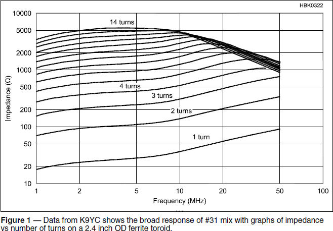
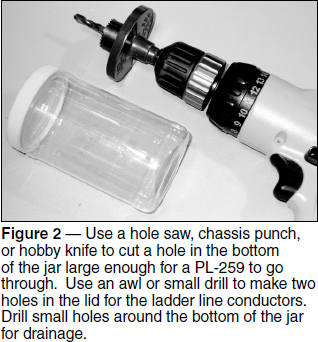
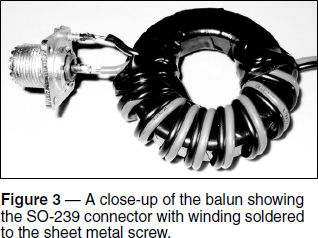

Transmission Lines and Impedance Matching
Experiment #131 — Coax-to-Open Wire Balun
I recently designed some Extended Double Zepp (EDZ) antennas that present a reasonable SWR on 14 and 21 MHz. The design uses a specific length of 450 Ω ladder line, resulting in an SWR of less than 2:1 at the end of the ladder line on both bands. Since that length was too short to reach the shack, I chose to transition from the 450 Ω line to 50 Ω coaxial cable. (The EDZ design will be presented in a future column or article.)
One can just connect the coax to the ladder line and hope for the best — it might work, as some designs for multiband antennas will function that way. Unfortunately, the outside of the coax shield is also connected at the junction of the two feed lines, creating a common-mode current path with impedance depending on the length of the coax and the operating frequency.
The basic idea is explained in Roy Lewallen’s, W7EL, classic article “Baluns & What They Do,” at www.eznec.com/Amateur/Articles/Baluns.pdf. If you haven’t read it, this would be a good time to do so.
The Case for Using a Balun
Roy’s article shows why a current or choke balun is needed at the transition from the coax to a dipole with the wires at right angles to the coax. What if instead of a dipole, the coax is connected to ladder line? Is a balun still necessary? In transmission lines, the conductors are tightly coupled so that the currents are equal and in opposite directions.1 That means the same current should flow on the inside of the coax shield and the conductor of the ladder line to which the shield is connected. If any of the current escaped on the outside of the coax feed line as common-mode current, then the balanced current rule would be violated, upsetting the impedance presented at the junction of the two feed lines.
While the coupling of the two conductors in the feed line should be sufficient to guarantee balanced currents in each, it’s a good idea to raise the impedance of the common-mode current path, especially because you don’t know the impedance of that path. Common-mode current on feed lines can cause the antenna system to behave unpredictably.
There is another reason to add some common-mode impedance to the feed line — preserving the symmetry of the antenna system. With a balanced antenna such as a dipole or EDZ, decoupling of the feed line’s common-mode current path from the antenna’s radiated field is also important, as explained in W7EL’s article. Since common-mode chokes are difficult to create for ladder line, I oriented that portion of the feed line at close to right angles from the antenna to preserve antenna balance. Adding a choke balun at the junction of coax and ladder line was the next step. (If the coax is parallel to the antenna, add a coiled-coax choke or two along the coax to minimize common-mode current all along the feed line.)
The choke balun can take many forms, as explained in the ARRL Handbook and ARRL Antenna Book.2 I decided against the W2DU-style balun of many ferrite beads on the coax because of the expense, and against the coiled-coax balun because it is somewhat heavy and unwieldy when suspended by the feed line (particularly if form-wound). It is also hard to create a scramble-wound choke that works well over the range of 40 to 10 meters (the EDZ is tunable on the WARC bands and 40) so I selected a compromise between all three designs.
Balun in a Jiffy
My choke balun was easily wound on a ferrite toroid core, using a bifilar winding that is really just a very closely spaced parallel-conductor feed line. By using the right mix of ferrite, the choke will create enough impedance across the HF range.
Following the guidance of Jim Brown’s, K9YC, tutorials on ferrites and chokes, I chose a 2.4 inch diameter #31 mix with a winding of 10 turns.3, 4 The ferrite tutorial estimates that the balun’s choking impe-dance at 7, 14, and 28 MHz is 3000, 3500, and 2000 Ω, respectively, as shown in Figure 1. For the bifilar winding, I used two-conductor PVC-insulated #16 zip cord which is fine for 100 W power levels. (If you plan on running high power, use #12 or larger wire.) For this core you need about 3 inches of wire per turn plus the connections at either end for a total of about 36 inches of wire, including the input and output connections.5

The balun would be installed outside, suspended in mid-air, with up to 30 feet of coax hanging from the balun. Therefore, I needed a lightweight, non-conductive enclosure that could accommodate an SO-239 connector and the ladder line. New enclosures all seemed to be rectangular, heavy, and expensive. PVC pipe and caps would be really heavy. While sorting through a bag of empty food containers that I use to hold parts, I found my balun enclosure in the form of a peanut butter jar.
The 16 oz size turned out to be perfect for a 100 W balun and 28 oz jars are large enough for high-power models (Figures 2-4 show balun assembly). The clear jar is tough and a 2.4 inch toroid fits inside after winding, although you have to squeeze the jar a bit to get it through the threaded part of the jar. To get the ladder line through the lid, punch some holes with an awl or small drill bit. Drill or cut a hole in the bottom of the jar that is a little bit bigger than the shell of a PL-259 connector. Drill three or four small holes around the bottom of the jar for drainage. For UV protection, spray paint the jar and lid with outdoor enamel.



Begin winding by securing the first turn with high-quality electrical tape such as Scotch 33+ or a wire tie. Then wind 10 turns on the core, making sure each turn is snug on the core, securing the final turn. I have tried both a single end-to-end winding and the crossover style of winding introduced by W1JR in which after half the turns are wound, the winding crosses through and over to the opposite side of the core, then continues to the point opposite the first turn. The crossover winding has little effect at HF but it conveniently places the input and output connections on opposite sides of the core. This makes the balun easier to assemble and holds it straight between the top and bottom of the jar. Both styles work fine in this use. The input and output leads should be short enough (about 1 inch for the low-power version) that they are not bent against the jar with the lid on.
To attach the winding to the SO-239, tin the hollow tip of a #4 self-tapping sheet metal screw. Then place a small amount of anti-oxidation compound such as Penetrox on the screw threads and turn it into one of the SO-239 flange holes. (A #6 screw also works but you’ll probably have to drill out the SO-239 hole a little bit, depending on the manufacturer.) Then solder one winding wire to the screw and the other to the SO-239 center conductor. Attaching the SO-239 to the jar with more sheet metal screws during installation is optional.
To test the balun before attaching the ladder line, solder a 47 or 51 Ω resistor across the output winding and use an antenna analyzer to measure the balun’s input impedance. It should be close to 50 Ω with an SWR of 1:1. Move your hand along the coax and make sure the SWR doesn’t change, a symptom of common-mode current on the coax. Polarity of the input and output windings is not important unless you are making a set of baluns in which case you should be consistent in how the windings are attached to the SO-239 and ladder line.
Poke the ladder line conductors through the lid, and then use needlenose pliers to curl the wire into a circle or U for soldering. Solder the output leads to the ladder line wires. If you want, coat those connections with liquid electrical tape or aquarium RTV sealant. Leave the lid off for now.
To install the balun, insert the coaxial feed line’s PL-259 through the hole in the jar and screw it on to the SO-239. Use the coax to pull the core into the jar until the lid is against the threads. Screw the jar back into its lid. The PL-259/SO-239 should turn freely and not bind in the hole. Waterproof the coax connectors and you are done!
Parts List
2.4” #31 mix ferrite toroid core (Fair Rite 2631803802, Mouser 623-2631803802)
36” of two-conductor, #16 PVC-insulated zip cord (RadioShack 55057440)
16 oz peanut butter jar
SO-239
#4 self-tapping screw
1See the discussion of mutual induction and Lenz’s law in Experiments #117 and #118. All previous Hands-On Radio experiments are available to ARRL members at www.arrl.org/hands-on-radio.
2The ARRL Handbook and ARRL Antenna Book are available from your ARRL dealer, or from the ARRL Store. Telephone toll-free in the US 888-277-5289, or 860-594-0355; fax 860-594-0303; www.arrl.org/shop/; pubsales@arrl.org.
3audiosystemsgroup.com/RFI-Ham.pdf.
4audiosystemsgroup.com/CoaxChokesPPT.pdf.
5The 36" bifilar winding starts to have an appreciable electrical length at 10 meters and has an additional transforming effect on the impedance that increases with frequency.